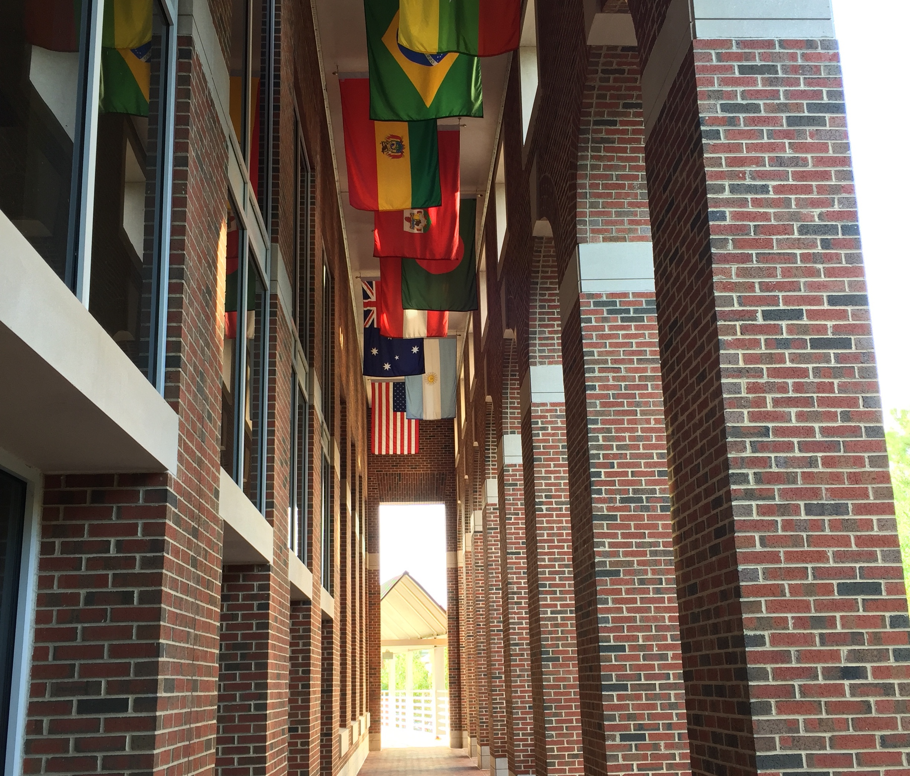

This month marked the 26th celebration of Filipino American History Month. While the bill to nationally recognize the historical month was only passed by the House of Representatives in 2009, it was actually established in 1992 by the Filipino American National Historical Society.
This year, UNC-Chapel Hill has made an effort to host and promote events relating to the Philippines, such as the talk “Spirits in a New Age: Philippine Centers of the Global Esoteric”conducted by Deirdre de la Cruz and Kasama’s Filipino-American Identity Discussion.
According to White House archives from 2016, President Barack Obama wrote a letter on the history of Filipino-Americans in the United States and focused on the value of their assistance in World War II, establishing a program to help veterans bring relatives to the United States.
Obama wrote, “as we mark this special month, we celebrate the ways Filipino Americans have lent their unique voices and talents to changing our country for the better.”
At UNC-Chapel Hill, among the various events on campus and the great number of programs available for Asian Studies, one might be surprised by the lack of programs for any Southeast Asian studies or languages.
“Yes, a lack of resource(s) for sure,” said Shuyi Lin. “There’s no department on campus for Southeast Asia.”

Consequentially, student groups are some of the only ways Southeast Asian programs reach the student body.
Lin, a program associate at the Carolina Asia Center, said the Southeast Asia Student Association has been revived from previous years but faced challenges, especially in being recognized by the Student Union and even getting a room for meetings.
Becky Butler, an English language specialist at the Writing Center, said SEASA is working to “bring to the forefront a lot of the issues that they face in their communities and thinking strategically about how to make partnerships across ethnic groups and community groups.”
Another group, the Filipino American Association,Kasama, held an identity discussion on October 16 in honor of the month. Students met at 1789 on Franklin Street, a safe space for sharing experiences of micro-aggressions, discriminations, and identity.
According to Pew Research Center, as of 2015, Filipinos were the third highest growing Asian group in the US population, at almost 4 million people. According to the Carolina Population Center, in 2013, 8 percent of the 252,000 Asian residents in North Carolina were Filipino. However, the way that demographic data categorizes people might also be detrimental.
“It's very salient in California,” said Butler. “But I think it's relevant for college admissions and everywhere…the disaggregation of data.”
“There are a lot of inequities when all Asians are grouped together,” Butler said. “You know there's…policies…put in place based on the data, but it doesn't really make a lot of sense, because what it means to be Asian is a myriad different things.”
An example of confusing categorization is the 2004 report by the Southeast Asia Resource Action Center, which didn’t even include Filipinos in their definition of Southeast Asians, including just Cambodians, Vietnamese, Hmong, Laotians. Instead, Filipinos were classified under “Asian American groups,” alongside Chinese and Asian Indians, among others.
This inconsistency in categorization can be confusing and have implications for identity and representation.
One of the other ways Southeast Asia is being acknowledged on campus is through the Southeast Asian Approaches Faculty Working Group, made up of five faculty and 40 scholars across four departments at UNC, as well as Duke University and N.C. State University, to promote “visibility of Southeast Asian studies in the Triangle.”
Butler is a part of this working group.
“One thing that we really lack at UNC and actually in the U.S. South in general, is instruction in Southeast Asian languages. I'm not sure that there's any university in the U.S. South right now that teaches a Southeast Asian language, which is, from my perspective...shocking.”
Donald M. Nonini, professor of anthropology at UNC, is another member of the Southeast Asian Approaches working group, specializing for over 30 years in research on ethnic Chinese in Malaysia, Indonesia and Australia.
Nonini said one major obstacle to establishing a program is the sheer amount of languages used in Southeast Asia, making it difficult to find instructors.
Nonini said another reason why there is a lack of programming is that administration (board of governors, state assembly) “tries to economize…over the last 15 years or so, appropriations per student have fallen from the state assembly by 40 percent. If they were more generous, they might support more of these programs.”
This lack of support for Southeast Asia programming, Nonini said, is a disservice to both students from those regions and American students. He emphasized the trade between North Carolina and the countries in Southeast Asia.
“So, knowing a little bit more about the populations, the cultures, the social lives, the hundreds of millions of people living in Southeast Asia, including the Philippines, would do us all a lot of good.”
However, Nonini does appear supportive of the current efforts on campus.
“We have a valiant, really great Carolina Asia Center and staff…they’re [the] best with limited resources,” Nonini said. “Right now, we’re dealing with the modest funding we can get from the national government.”
“We’re really well positioned and we have a really good opportunity and infrastructure to make something like that happen,” said Butler.